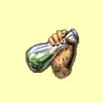

Magie tìla
Odstraò slabost
Mana: 1, Cena: 100, Potøebná úroveò dovednosti: Normální
Odstraní slabost postavy, pokud toto kouzlo zakouzlí¹ vèas. Vy¹¹í úroveò v Magii Tìla ti umo¾ní kouzlo kouzlit po del¹í dobì slabosti postavy. Poté ji¾ nezbývá nic jiného, ne¾ odpoèinek nebo náv¹tìva chrámu.
| Normální | Funguje, pokud slabost byla krat¹í ne¾ 3 minuty za bod dovednosti | |
| Expert | Funguje, pokud slabost byla krat¹í ne¾ 1 hodina za bod dovednosti | |
| Mistr | Funguje, pokud slabost byla krat¹í ne¾ 1 den za bod dovednosti | |
| Velmistr | Kouzlo není èasovì omezeno |
Léèení
Mana: 2, Cena: 200, Potøebná úroveò dovednosti: Normální
Vyléèí zranìní jedné postavy. Vyléèené zdraví je 5 plus 2 body za bod dovednosti v Magii Tìla.
| Normální | Léèí 5 bodù zdraví + 2 za bod dovednosti | |
| Expert | Léèí 5 bodù zdraví + 3 za bod dovednosti | |
| Mistr | Léèí 5 bodù zdraví + 4 za bod dovednosti | |
| Velmistr | Léèí 5 bodù zdraví + 5 za bod dovednosti |
Odolnost proti tìlu
Mana: 3, Cena: 300, Potøebná úroveò dovednosti: Normální
Zvy¹uje odolnost v¹ech tvých postav proti kouzlùm Magie Tìla o mno¾ství úmìrné tvým bodùm dovednosti Magie Tìla. Efekt trvá hodinu za ka¾dý bod dovednosti.
| Normální | 1 bod odolnosti za bod dovenosti | |
| Expert | 2 bod odolnosti za bod dovenosti | |
| Mistr | 3 bod odolnosti za bod dovenosti | |
| Velmistr | 4 bod odolnosti za bod dovenosti |
Zraò
Mana: 4, Cena: 400, Potøebná úroveò dovednosti: Normální
Pøímo zpùsobí magické zranìní samostatné nestvùøe. Zranìní je 8 bodù plus 1-2 body za bod dovednosti Magie Tìla.
| Normální | Støednì rychlé zotavení | |
| Expert | Rychlej¹í zotavení | |
| Mistr | Rychlej¹í zotavení | |
| Velmistr | Nejrychlej¹í zotavení |
Regenerace
Mana: 5, Cena: 500, Potøebná úroveò dovednosti: Expertní
Pøidá postavì schopnost regenerovat zdraví. Regenerace pomalu léèí zdraví po dobu, kdy je toto kouzlo aktivní.
| Normální | n/a | |
| Expert | Pomalé léèení, trvání 1 hodinu za bod dovednosti | |
| Mistr | Rychlej¹í regenerace | |
| Velmistr | Nejrychlej¹í regenerace |
Odstraò jed
Mana: 8, Cena: 750, Potøebná úroveò dovednosti: Expertní
Vyléèí otrávení jedem postavì, pokud toto kouzlo zakouzlí¹ vèas. Vy¹¹í úroveò v Magii Tìla ti umo¾ní kouzlo kouzlit po del¹í dobì otrávení postavy, dokud nebyl dosáhnut "bod, ze kterého neni návratu". Poté ji¾ nezbývá nic jiného, ne¾ náv¹tìva chrámu.
| Normální | n/a | |
| Expert | Funguje, pokud je otrava krat¹í ne¾ 1 hodinu za bod dovednosti | |
| Mistr | Funguje, pokud je otrava krat¹í ne¾ 1 den za bod dovednosti | |
| Velmistr | Bez èasového limitu |
Kladivové pìsti
Mana: 10, Cena: 1000, Potøebná úroveò dovednosti: Expertní
Kladivové pìsti magicky zesílí dovednost v boji beze zbranì, umo¾òujíce zasáhnout nestvùru mnohem pøesnìji na její slabá místa. Toto kouzlo zpùsobí extra zranìní Magií Tìla, stejné jako by bylo fyzické zranìní zpùsobené útokem beze zbranì.
| Normální | n/a | |
| Expert | Rychlej¹í zotavení | |
| Mistr | Rychlej¹í zotavení | |
| Velmistr | Kouzlo pùsobí na celou dru¾inu |
Uzdrav nemoc
Mana: 15, Cena: 1500, Potøebná úroveò dovednosti: Mistrovská
Vyléèí nemoc postavì, pokud toto kouzlo zakouzlí¹ vèas. Vy¹¹í úroveò v Magii Tìla ti umo¾ní kouzlo kouzlit po del¹í dobì nemoci postavy, dokud nebyl dosáhnut "bod, ze kterého neni návratu". Poté ji¾ nezbývá nic jiného, ne¾ náv¹tìva chrámu.
|  | Normální | n/a |
| Expert | n/a | |
| Mistr | Funguje, pokud je nemoc krat¹í ne¾ 1 den za bod dovednosti | |
| Velmistr | Bez èasového limitu |
Ochrana pøed magií
Mana: 20, Cena: 2000, Potøebná úroveò dovednosti: Mistrovská
Odolnost proti magii pùsobí na celou dru¾inu a pøidává jí imunitu proti nìkterým kouzlùm a schopnostem nestvùr. Tìmi jsou: jed, nemoc, zkamenìní, ochromení a slabost. Poka¾dé, kdy¾ kouzlo uchrání postavu, kouzlo zeslábne. Kouzlo vydr¾í 1 útok za bod dovednosti v Magii Tìla, poté je kouzlo zru¹eno.
| Normální | n/a | |
| Expert | n/a | |
| Mistr | Trvání 1 hodinu za bod dovednosti | |
| Velmistr | Zaruèuje imunitu pøed efekty smrti a zahubení |
Spla¹ená pìst
Mana: 25, Cena: 3000, Potøebná úroveò dovednosti: Mistrovská
Spla¹ená pìst uhodí samostatný cíl velikou magickou silou a zpùsobí 30 bodù zranìní plus 1-5 bodù za bod v dovednosti Magie Tìla.
| Normální | n/a | |
| Expert | n/a | |
| Mistr | Støednì rychlé zotavení | |
| Velmistr | Rychlej¹í zotavení |
Mocná léèba
Mana: 30, Cena: 5000, Potøebná úroveò dovednosti: Velmistrovská
Výléèí zdraví celé tvé dru¾iny najednou. Síla léèení je dána 10 plus 5 bodù zdraví za bod dovednosti v Magii Tìla.
| Normální | n/a | |
| Expert | n/a | |
| Mistr | n/a | |
| Velmistr | Toto kouzlo je tak dobré, jak jen mù¾e být! |